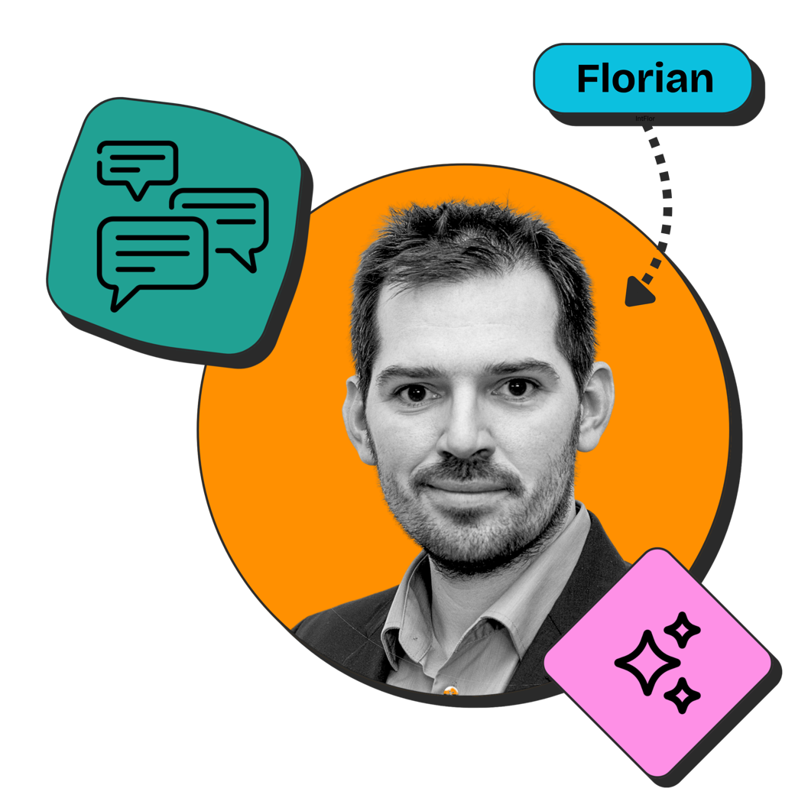

Hi, ich bin Florian.
Ich bin
Lehrer.Begleiter.Berater.Organisator.KI-Enthusiast.Designer.Lehrer.
Lehrer für Geografie & Ethik aus Brandenburg — mit Leidenschaft für digitale Bildung, kritisches Denken und echte Lernfreude.

Meine Schwerpunkte
Geografie & Erdkunde
Vom lokalen Raum bis zur globalen Vernetzung — ich mache Geografie greifbar, aktuell und relevant für die Lebenswelt meiner Schülerinnen und Schüler.
Kontakt aufnehmen →Ethik & Philosophie
Kritisches Denken, Wertediskussion und ethische Urteilsbildung — ich begleite junge Menschen beim Finden ihrer eigenen Haltung in einer komplexen Welt.
Kontakt aufnehmen →Digitale Bildung
KI, digitale Tools und moderne Lernmethoden im Unterricht — ich bringe Technikbegeisterung in den Klassenraum und mache digitale Kompetenz erfahrbar.
Kontakt aufnehmen →Projekte
Was ich nebenbei baue.
Kleine Web-Tools, die im Schulalltag entstanden sind — und ein Design, das dabei gleich mit.
Schreib mir
eine Nachricht.
Ob Austausch mit Kolleginnen und Kollegen, Rückfragen oder Kooperationsideen — ich freue mich über Nachrichten. Ich antworte innerhalb von 2–3 Werktagen.
Schreib mir
florian@example.com